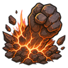
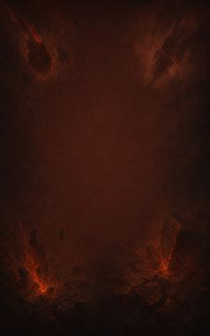
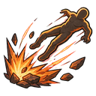

Power Attack B
Trade aim for strength for a fight: devastating blows.
| Rank | Chakra | Cooldown | Class level |
|---|---|---|---|
| B | 24 | 25 s | 4 |

Technique trees › Universal taijutsu
5 techniques · Taijutsu tab
Unlocks through World of Naruto's own trees, a gene, a build choice or a profession.

Trade aim for strength for a fight: devastating blows.
| Rank | Chakra | Cooldown | Class level |
|---|---|---|---|
| B | 24 | 25 s | 4 |

Send one enemy flying.
| Rank | Chakra | Cooldown | Class level |
|---|---|---|---|
| B | 24 | 25 s | 7 |
Wild blows daze everyone close.
| Rank | Chakra | Cooldown | Class level |
|---|---|---|---|
| C | 14 | 15 s | 6 |
One swing through every enemy in front.
| Rank | Chakra | Cooldown | Class level |
|---|---|---|---|
| B | 24 | 25 s | 9 |
A blow that leaves one enemy reeling for long seconds.
| Rank | Chakra | Cooldown | Class level |
|---|---|---|---|
| B | 24 | 25 s | 11 |